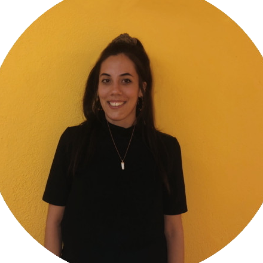

EQUIPO
Sí, ¡somos Adalabers! por eso nos gustan los nuevos retos , creemos en nuestro potencial y ¡vamos a lograrlo! Somos un grupo de mujeres con una gran experiencia en el área social, la comunicación, la investigación y hasta la hostelería...
Ahora estamos en proceso de convertirnos en programadoras front - end profesionales, disfrutamos del camino y gracias a Adalab creemos en el futuro.
Fortalezas
Nuestro equipo está compuesto en su totalidad por programadoras junior, pero aunque ahora estamos ante nuestros primeros proyectos nos sobran ganas para enfrentarnos a ellos.
No nos asusta nada, hemos sido capaces de reinventarnos a nosotras mismas, apostando todo por un nuevo reto personal y profesional, donde estamos volcando toda nuestra pasión y ganas de aprender. Gracias a nuestras trayectorias profesionales en diferentes ámbitos podemos aportar nuevos puntos de vista a cualquier idea.
Debilidades
Debido a que desde pequeñas se nos inculca que el sector tecnológico no es para las mujeres, nos encontramos con una brecha de género en este sector masculinizado.
El que nos hayamos formado en diferentes materias hace primero, que debamos formarnos desde puntos de inicio diferentes y con muchos conocimientos que adquirir haciendo que el camino por recorrer sea largo, y segundo, superar el síndrome del impostor, que si bien se da en diferentes momentos de la carrera profesional de una persona, cuando se trata de perfiles junior como el nuestro es una barrera más difícil aún de franquear.
QUIÉNES SOMOS
-

Beatriz García
Siempre he creído que la comunicación mueve el mundo. Por eso tras 10 años de experiencia profesional en radio y televisión quiero explorar nuevos formatos.
Ahora con la programación front-end puedo trabajar en la red, comprender el área técnica y disfrutar de la comunicación online, y lo más importante...conectar personas. -

Clara Harguindey
Si “cualquier tecnología suficientemente avanzada es indistinguible de la magia” ¡quiero ser maga! He desarrollado proyectos de mediación cultural basados en estrategias digitales y de gamificación en diferentes museos de Madrid.
Ahora, gracias a Adalab, pretendo cambiar de rumbo y apostar por la dimensión técnica, siendo programadora front-end. -

Joana Jiménez
Mi experiencia como veterinaria en urgencias me ha enseñado a lidiar con la presión en el trabajo.
Los dos últimos años he emprendido desde cero un proyecto de hostelería aprendiendo trabajo en equipo, organización y siendo autodidacta en áreas que desconocía. Ahora empiezo esta aventura profesional con mucha ilusión. -

Maria Teresa Martínez
Soy de Cartagena, y llevo dos años viviendo en Madrid. He trabajado en el área social, pero tengo un perfil polivalente. En mi trabajo siempre he tenido que trabajar con ordenadores, de ahí que mi interés por el mundo tecnológico.
-

Patricia Muñoz
Ingeniera de materiales con experiencia en investigación reinventándome a programadora. De Laguna de Duero (Valladolid) pero viviendo en Madrid desde hace 12 años. Fan del rock, las series y todo lo relacionado con STEM (Ciencia, Tecnología, Ingeniería y Matemáticas).